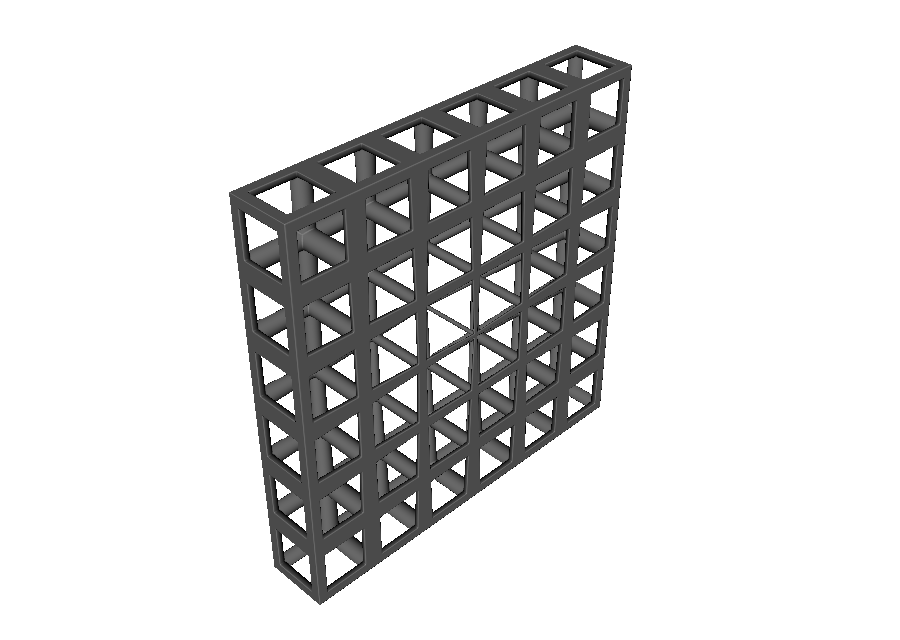
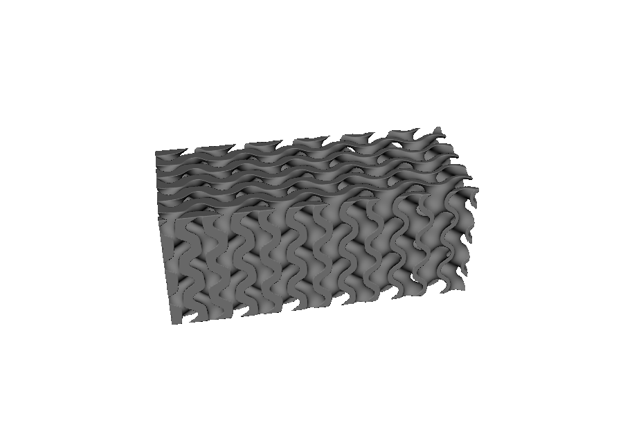
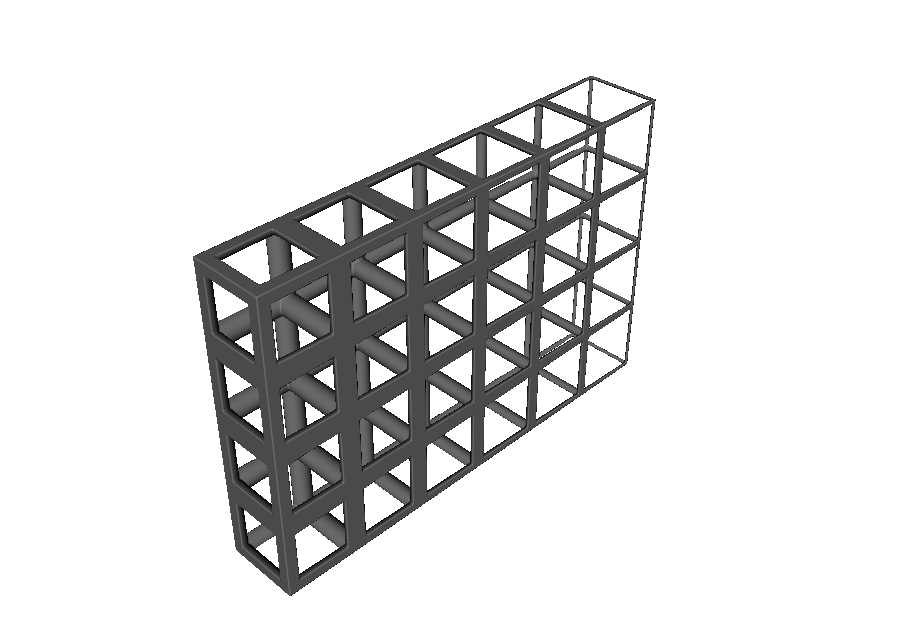
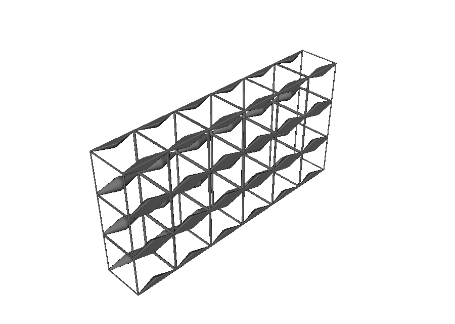
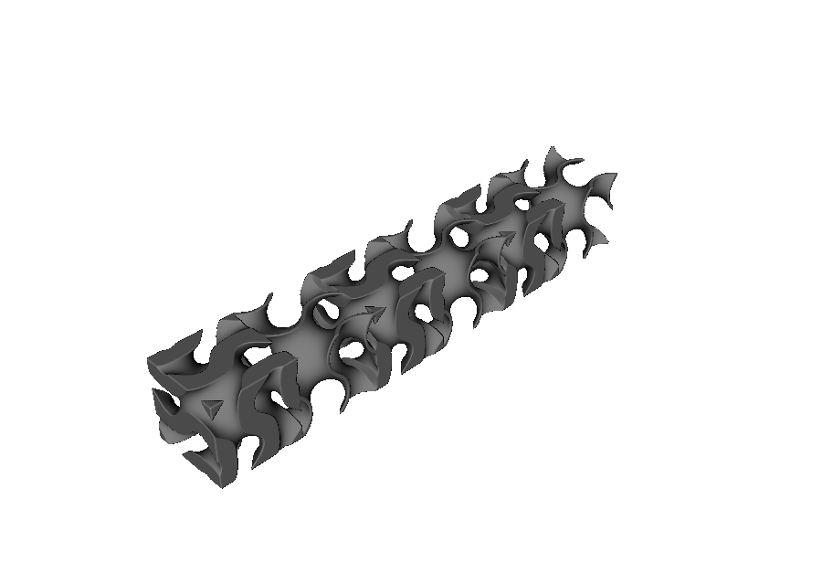
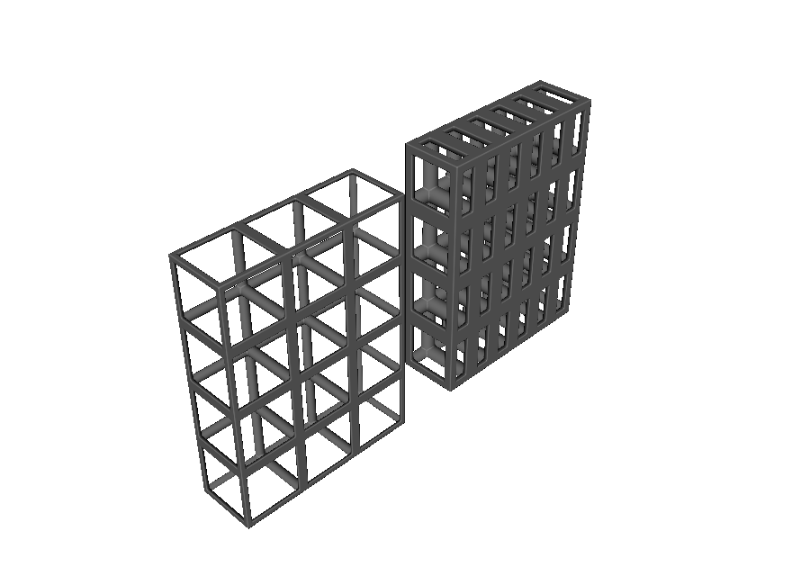
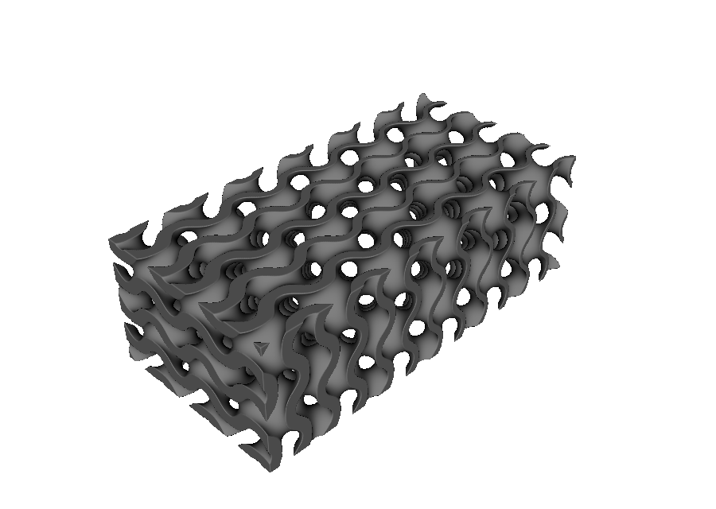

Functionally graded metamaterial geometry#
A functionally graded metamaterial changes across a part instead of repeating one fixed cell everywhere. Its walls may become thicker, its beams may grow, its cells may spread out, or its topology may transition from one region to another.
In OpenVCAD, an Attribute supplies the changing value. The same attribute system used for sampled object data can directly control lattice geometry and cell spacing. This guide begins with simple scalar controls, then introduces vectors and the coordinate choices that are specific to lattices.
The complete walkthroughs are numbered 01 through 10 in examples/metamaterials/geometry_grading/.
Compose scalar attributes#
A scalar attribute produces one number at every point. That makes it a natural control for wall thickness, beam radius, cell spacing, or a mixing weight.
You can build a more useful control from smaller steps:
x_position = pv.FloatAttribute("x")
position_01 = x_position.normalize(-24.0, 24.0)
curved_position = position_01 ** 2
thickness = curved_position.map_range(0.0, 1.0, 0.55, 1.65)
bounded_thickness = thickness.clamp(0.55, 1.65)
Here, normalize() turns the known X range into values from 0 to 1. Squaring those values makes the change gentle near one end and faster near the other. map_range() then turns that shape into millimetres of wall thickness. The final clamp is an optional guard that prevents values outside the allowed range.
OpenVCAD does not guess normalization bounds. You provide them explicitly so the result does not change with sampling resolution. Ordinary numbers can be used directly in arithmetic and as lattice controls; OpenVCAD promotes them to scalar attributes when needed.
Use DerivedFloatAttribute when a formula is easier to read with named inputs:
combined = pv.DerivedFloatAttribute(
"base + gain * signal",
{
"base": 0.4,
"gain": 0.8,
"signal": position_01,
},
)
Each arithmetic step creates a new attribute, leaving its inputs available for reuse. OpenVCAD rejects incompatible input types when the expression is built. It also reports invalid sampled results, such as division by zero or a non-finite number, at the point where they occur.
Grade TPMS wall thickness#
Passing a FloatAttribute to wall_thickness makes the TPMS wall respond to position:
wall_thickness = pv.FloatAttribute("0.6 + 2.0 * (x + 24.0) / 48.0")
root = mm.gyroid(cell_map, wall_thickness=wall_thickness)
In 01_graded_thickness_tpms.py, the map spans X coordinates from -24 to 24. The expression therefore produces a wall thickness of 0.6 mm at one end and 2.6 mm at the other.

A solid TPMS accepts the same kind of scalar control through level. Instead of adding thickness around a surface, level changes how much space is occupied by each of the two interwoven regions.
Change cell spacing#
The CellMap decides where cell boundaries are placed. To vary spacing, start with a regular map and create a second map with redistributed boundaries:
position_across_map = base_map.logical_position.x
u_spacing = position_across_map.map_range(0.0, 8.0, -0.8, 0.8)
warped_map = mm.warp_cell_map(
base_map,
u_scale=u_spacing,
lock_u_bounds=True,
)
root = mm.gyroid(warped_map, wall_thickness=1.4)
The u_scale values are relative spacing weights, not requested cell sizes in millimetres. A larger value gives that part of the map more room; a smaller value compresses it. lock_u_bounds=True keeps the two outer faces fixed, so all eight cells are redistributed inside the original width.
warp_cell_map() returns a new map and leaves base_map unchanged. It reads the spacing control on the original map before any boundaries move, which keeps the result predictable. See 02_graded_cell_spacing.py.

Grade beams, joints, faces, and plates#
The same scalar pattern works beyond TPMS walls. Graph lattices accept attributes for beam_radius and node_radius. Face and plate lattices accept attributes for wall_thickness, and plate lattices also accept an eccentricity control.
beam_radius = pv.FloatAttribute("0.3 + (x + 22.0) / 44.0")
root = mm.bcc(cell_map, beam_radius=beam_radius)
These values remain physical distances in millimetres. Only the value-producing rule changes from point to point. 03_graded_strut_radius.py uses the expression above to taper a BCC lattice across a block.

Compose vector attributes#
A Vec3Attribute produces three related numbers at every point. Vectors are useful for positions, movements, and directions. Most lattice controls still need one number, so vector operations help turn those three values into a scalar control.
For example, a position vector can become distance from the center:
planar_position = pv.Vec3Attribute("x / 24", "0", "z / 24")
radial_distance = planar_position.magnitude().clamp(0.0, 1.0)
beam_radius = radial_distance.map_range(0.0, 1.0, 0.25, 1.25)
magnitude() answers “how far is this vector from zero?” without choosing one axis. Component access such as .x selects one value. .normalized() keeps a vector’s direction while making its length one, and dot() measures how strongly two directions align.
04_vector_magnitude_radius.py uses distance from the center to make a shallow cubic lattice thin in the middle and thick around its edges.
{kind=link}

Coordinates follow the geometry that uses them#
Expressions such as pv.FloatAttribute("x") read the X coordinate supplied by the node that uses the attribute. If a transform rotates that node, the geometry and its control rotate together.
thickness = pv.FloatAttribute("0.55 + 1.35 * (x + 24) / 48")
lattice = mm.gyroid(cell_map, wall_thickness=thickness)
root = pv.Rotate(0.0, 0.0, 35.0, lattice)
Think of the thickness pattern as being painted onto the lattice before the rotation. Rotating the finished design does not leave the pattern behind in the old direction. 05_transformed_grading.py shows this behavior.
{kind=link}

An attribute controls only the node that receives it as an input. Attaching the same attribute to a parent records sampled data on that parent, but it does not reach down and change a child lattice. OpenVCAD does not provide a switch that keeps a lower lattice’s control fixed in global space while the lattice itself transforms.
Choose coordinates from the CellMap#
Ordinary x, y, and z values are measured in millimetres. That is usually what you want. A lattice pattern sometimes needs a different kind of position, though. You may want to know:
how far a point is across the complete lattice,
where it falls inside the current cell, or
which cell contains it.
The CellMap provides an attribute for each question. Select a component with .x, .y, or .z, then use it like any other scalar attribute.
Position across the complete lattice#
cell_map.logical_position counts distance in cells. If a map has six cells across X, its X value runs smoothly from 0 at the minimum-X side to 6 at the maximum-X side. It does not restart at each cell.
position_across_lattice = cell_map.logical_position.x
beam_radius = position_across_lattice.map_range(0.0, 6.0, 0.35, 1.25)
06_position_across_lattice.py uses this value to make every beam gradually thicker from one side of the map to the other.
{kind=link}

Position inside each cell#
cell_map.unit_cell_phase describes a repeating position inside a cell. Each component starts at 0, reaches 0.5 in the middle, and reaches 1 at the far side. The pattern then starts again in the next cell.
position_inside_cell = cell_map.unit_cell_phase.x
distance_from_middle = abs(position_inside_cell - 0.5)
beam_radius = distance_from_middle.map_range(0.0, 0.5, 1.25, 0.25)
07_pattern_inside_each_cell.py makes beams thick in the middle of every cell and thin at every cell boundary.
{kind=link}

The number of the current cell#
cell_map.cell_index is constant inside a cell and changes to the next integer at its boundary. Across a six-cell row, its X component is 0, 1, 2, through 5. This is useful for alternating or grouping whole cells.
cell_number = cell_map.cell_index.x
even_or_odd = pv.DerivedFloatAttribute(
"cell - 2 * floor(cell / 2)",
{"cell": cell_number},
)
wall_thickness = even_or_odd.map_range(0.0, 1.0, 0.3, 1.8)
The short expression turns 0, 1, 2, 3, ... into 0, 1, 0, 1, .... Those two values are then mapped to thin and thick walls. See 08_alternating_cell_thickness.py.
{kind=link}

If a sample lands exactly between two cells, OpenVCAD counts it as part of the next cell. The map’s final outer face remains part of the last cell. This keeps boundary results consistent: position inside a cell is 0 where a new cell begins and reaches 1 only at the map’s final outer face.
Express a movement in cell units#
A vector such as pv.Vec3Attribute(1.0, 0.0, 0.0) normally means one unit along the ordinary X axis. Here, it represents a one-millimetre movement. Sometimes a lattice rule needs to know how much of a cell that movement crosses instead.
Consider two cells:
In a cell that is 4 mm wide, moving 1 mm crosses one quarter of the cell.
In a cell that is 8 mm wide, the same movement crosses one eighth of the cell.
cell_map.to_cell_frame(vector) performs that conversion. It keeps the physical movement the same, but reports it using the selected map’s cell axes and cell sizes.
09_movement_in_cell_units.py places two ordinary rectangular lattice panels side by side. Both panels are 24 mm wide. One contains six 4 mm cells, while the other contains three 8 mm cells:
one_mm_x_step = pv.Vec3Attribute(1.0, 0.0, 0.0)
def radius_for(cell_map):
step_in_cell_units = cell_map.to_cell_frame(one_mm_x_step)
fraction_of_cell_crossed = abs(step_in_cell_units.x)
return (0.2 + 3.6 * fraction_of_cell_crossed).clamp(0.4, 1.1)
For the smaller cells, fraction_of_cell_crossed is 0.25. For the larger cells, it is 0.125. The example turns that difference into beam radius, so the six-cell panel has thicker beams than the three-cell panel.
{kind=link}

The mathematical name for this local conversion is a Jacobian conversion. You do not need to create or manipulate a Jacobian yourself; to_cell_frame() does that work. Use it only when a vector represents a direction or movement that must be interpreted relative to lattice cells. Leave the vector unchanged when its ordinary X/Y/Z components are already what you need.
This example deliberately does not normalize the converted vector because the amount of cell crossed is the useful value. If only its direction matters, call .normalized() after to_cell_frame().
Use one control for geometry and sampled data#
An attribute is simply a value-producing rule until you attach it to a node with a name. Passing it as wall_thickness=control makes it control geometry, but does not automatically store a named output.
You can deliberately use the same control in both roles:
position_across_lattice = cell_map.logical_position.x
control = ((position_across_lattice / 6.0) ** 2).map_range(
0.0, 1.0, 0.55, 1.65
)
root = mm.gyroid(cell_map, wall_thickness=control)
root.set_attribute("wall_thickness_control", control)
The lattice samples control to build its wall. Attaching it as wall_thickness_control also makes the sampled values available to renderers, compilers, or later attribute processing. 10_shared_control_attribute.py contains the complete design.
{kind=link}

Mix unit cells with a scalar control#
A mixing weight is another scalar attribute. A weight of 0 selects the first unit cell, a weight of 1 selects the second, and values between them blend the two shapes.
weight = mm.ramp(
2.5,
3.5,
axis="u",
coordinates=cell_map.logical_position,
)
mixed_cell = pv.ImplicitUnitCell.mixed(
pv.ImplicitUnitCell.standard("gyroid"),
pv.ImplicitUnitCell.standard("schwarz_d"),
weight,
)
This ramp stays on the first cell through logical position 2.5, blends across the next cell, and reaches the second cell at 3.5. A rule based on cell_index can instead switch whole cells with no blend. The same 0-to-1 contract controls mm.mix(left, right, weight) for general geometry. See Heterogeneous conformal lattices for complete topology-mixing workflows.
Named scalar, vector, color, and material fields use the same implicit representation but have different attachment scopes and precedence rules. Continue with Attribute modeling for metamaterials. The same geometry controls also work on maps built from surfaces; see Conformal mapping CAD surfaces or Conformal mapping triangle meshes.